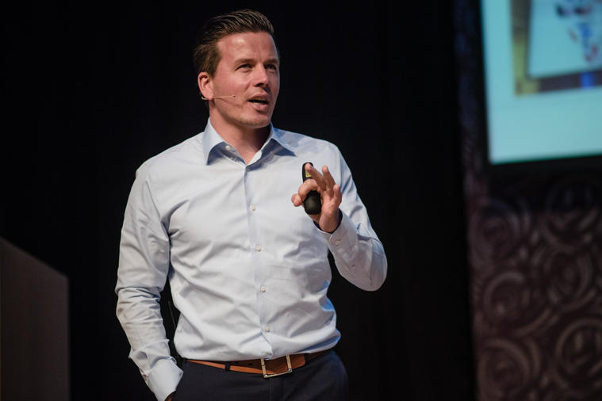
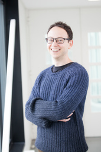
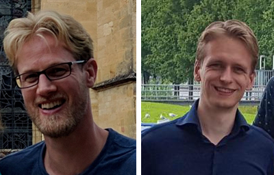
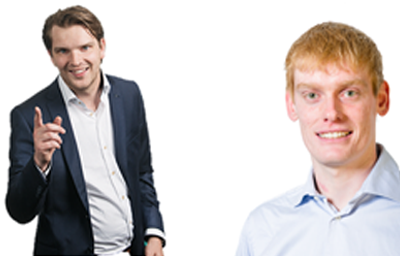
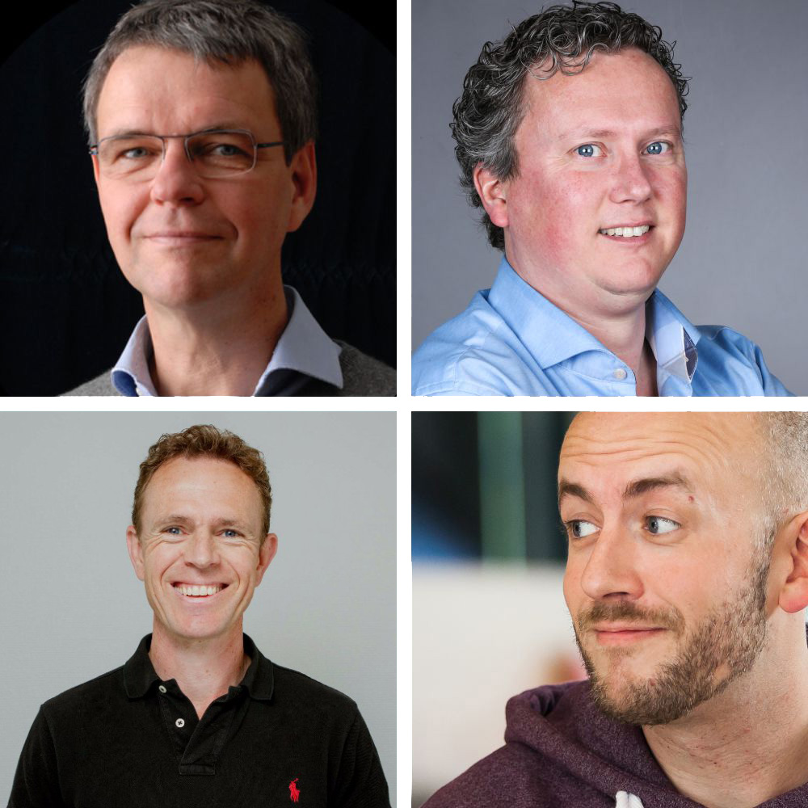
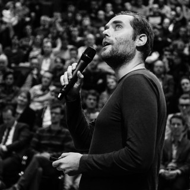
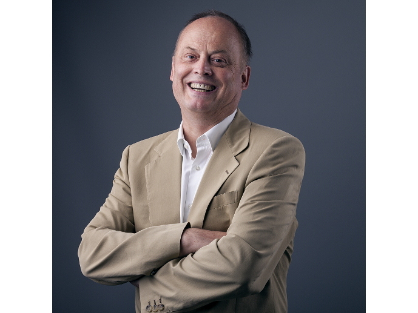
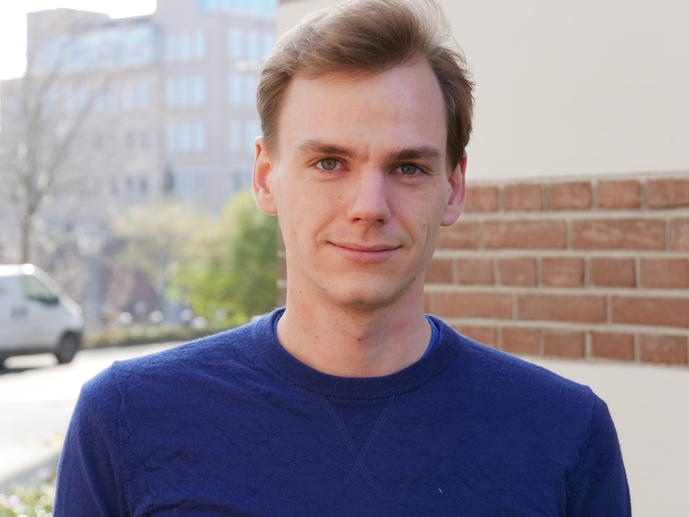
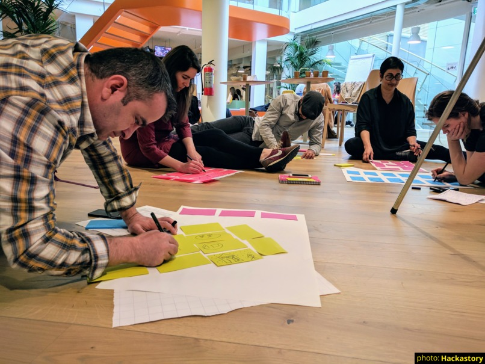

The Disruptors
A conference without speakers is like a swimming pool without water. We have collected the most inspiring entrepeneurs, scientist and experts from the business sector.
Hosts
Danny Mekić
Biography
Danny Mekić is a renowned Dutch technology- and innovation expert and founded his first internet company at the age of 15. He has sat on the advisory board for the Dutch Ministry of Education, Culture and Science, and Economic Affairs, and is an expert on guiding companies to be successful and innovate in a fast moving world. On top of his regular activities, Danny is also a consultant, speaker, a chairmen, mediator and university teacher.
You have brilliant speakers, thinkers and doers. But only a few people can continuously combine and strengthen these expertises. When it comes to an expert who knows the industry, understanding the new technologies and innovations as well as laws and regulations, there are just a few experts who can combine this, just like Danny Mekić.
Danny challenges organisations to think about how future-proof they are and not surprisingly, Mekić is currently one of the most asked - and best rated - speakers and chairmen in the Netherlands.
Read moreAnnemarie van Campen
Biography
Annemarie van Campen bridges the gap between communication and IT. As a project manager and digital transformation consultant, she has many years of experience in governmental and commercial organizations.
Annemarie is able to smoothly connect developers with 'digilliterates', and the C-suite with their clients. Combining her youthfull view and seasoned skills she translates needs, wishes and requirements into award winning projects that stand out in effectiveness and simplicity. Most recently, she guided the redesign and digitization of the Dutch traffic fine and the accompanying website CJIB.nl.
On stage, Annemarie is inquisitive and alert: playfull if possible, strict when needed. She strives for cheerfull interaction and a comfortable atmosphere.
Read more11:00 - 11:15
Opening
By hosts and organising committee
11:15 - 12:00
Jarno Duursma
Artificial intelligence first, human second?
Technology advances faster and faster. Smart computers are able to do more things we humans can, seeing, listening, speaking, remembering and reading. Smart software matches or surpasses human capabilities.
According to experts, Artificial Intelligence (AI) is the most disruptive technology of the next 10 years. Smart software will become our digital butler. It understands who we are who we are, what we want and why. A world full of opportunities opens itself for us. Smart AI systems will provide us with insights we would never have thought possible and give answers to questions we did not even know existed. Prosperity, time-saving and ease are the sweet fruits, but there might be a few bad apples
Read moreBiography
Jarno Duursma is trendwatcher and speaker about digital technology, author of books about social media, WhatsApp and Blockchain. He is founder of innovation platform #SMC050 and alumnus of Singularity University in Silicon Valley.
Read more12:15 - 13:00
David Elkouss, PhD
QuTech
Quantum Internet
The internet - a vast network that enables simultaneous long-range classical communication - has had a revolutionary impact on our world. The quantum internet will fundamentally enhance internet technology by enabling quantum communication between any two points on earth. Here, I will introduce what are the key aspects of quantum communications and will present the challenges that need to be overcome before the quantum internet becomes a reality.
Read moreBiography
David Elkouss is an assistant professor at QuTech. Elkouss received a double masters degree in electrical engineering from Universidad Politécnica de Madrid (UPM) and Telecom ParisTech in 2005-2006 and a Ph.D. in computer science in 2011-2012 from UPM. His Ph.D. thesis in classical error correcting codes for the postprocessing of quantum key distribution was awarded the UPM extraordinary dissertation prize.
In 2012, he moved to the Universidad Complutense de Madrid to work on quantum Shannon theory and more concretely on capacities of quantum channels. A highlight was the proof that it is necessary to solve an unbounded optimization problem in order to see whether or not a channel has a positive capacity.
In 2015, he moved to TU Delft where he was part of the team that performed the first loophole-free Bell experiment. The aim of his group is to develop the tools, such as entanglement purification protocols, novel error correction codes, quantum network protocol benchmarks and quantum network simulators that will enable the implementation of the first quantum networks.
Read moreNick Tinnemeier Wouter Stikkelorum
The shopping mall in your pocket How information technology (re)shapes your shopping experience
Still remember rushing to the shop before closing time? Just to discover that your favorite product is out of stock? That does not need to happen anymore. You are probably carrying around a whole shopping mall in your pocket right now. A shopping mall that never closes. Millions of products right at your fingertips. In this talk we look back at how information technology changed shopping as we know it today. How did we get there? What are the key technologies that facilitate online shops at the scale of, for example, Amazon, Zalando and bol.com? And we believe we are only at the beginning. The best has yet to come. So, we also peek at how upcoming technologies such as machine learning, augmented reality and blockchain will impact your shopping experience of tomorrow.
Read moreBiography
Nick started his career with four years of fun in academic research, inventing the formal semantics of his own programming language. His believe that you should not only practice what you preach, but also practice before you preach, made him decide to move to industry. He loves to combine his research skills with his pragmatic nature to discover new technologies and original ways to solve everyday problems, and has been doing just that for more than six years now. First for the banking and insurance industry, and recently, for bol.com: the biggest online retailer of Belgium and the Netherlands.
Wouter is part of the Young Professional program working as a software engineer for bol.com. In his first year he made sure that bol.com is always within the top Google search results whenever you search for something we sell. In his latest project he works on state of the art retail tooling. He studied computer science at the Universities of Utrecht and Amsterdam and enjoys explaining complex IT-systems or concepts as simple as possible. In doing so, he likes to exaggerate in all his analogies.
Read moreStefan Hessels Michel Brinkhuis
Topicus
Workshop
Disrupting Universities
Innovation in eduction is everywhere, except for.. universities. At Topicus we're changing the way students learn, by supporting schools with right tools. For example: Gynzy provides adaptive course materials, to improve students step by step. Individually. And SomToday supports teachers optimally in monitoring high school students' performance.
Universities don't innovate their teaching methods as fast as primary and middle schools do. In this workshop we'll together create a vision for innovative university education. You'll learn that not only technology does the job, but also behavioural change is required in order to change the world. We want to disrupt your education, help us doing so!
Read moreBiography
Stefan and Michel both graduated recently from the University of Twente, by finishing their master's degrees in Business Information Technology. At Topicus they're working with cutting edge technology, like machine learning, on data science problems while at the same time focussing on improving business processess. They know IT only cannot solve the world's problems, but involving people is a crucial aspect. You like keywords? Let's call it: People-centric, data-driven!
Read more13:00 - 14:15
Lunch
Don't forget to provide details about any allergies and diets here
14:15 - 15:00
Panel discussion
Discussion about disruptive technology
Click here for more information
During this panel discussion, 4 experts will present and discuss their view on Disruptive Technology. Should large companies be afraid of disruptive startups taking over their business? Or will the large and stable companies hold strong and outlive all disruptive startups? Disruptive technology may not even be about companies, but about automatisation of entire job markets. Will the technologies we develop disrupt our own jobs or is it all based on assumptions and do we have nothing to worry about?
Read moreJoshua Peper
Peperzaken
Internet of Things
First a story about how the city of Groningen became one of the first cities in the world with a LoRaWAN IoT network. Second half there will be (real life) examples of sensors on the network and code samples. In the end you will have enough info to start building your own sensor and add it to the biggest IoT network in the world
Read moreBiography
Joshua Peper, born and raised in Groningen founded his company Peperzaken in 2003 at the age of 19. First pioneering the ecommerce market, Peperzaken later switched to iPhone and Android development in 2008. In 2016 they were bought by Belsimpel.nl, the number one online independent phone webshop (with some physical stores). There he develops innovative solutions to service their customers even better (with machine learning, computer vision, apps etc.).
Read moreThis session is already full
Pim Otte
Quintor
Workshop
Starts at 14:00!
Build your own Blockchain
Blockchain is all the hype. But how do we get started? In this session we will visit a full stack of blockchain development. Our choice of technology here is the Ethereum platform combined with the Truffle Framework for smart contracts. Using Quintor's Truffle Box for Angular, we will visit writing and deploying smart contracts. Next, we will dive into the Truffle Framework, showing how to interact with these smart contracts from a Dapp. All of this will be done at the hand of a live demo and useful code snippets. We will only lightly touch general aspects of blockchains, the main focus of this talk will be the practical knowledge needed to develop applications.
Read moreBiography
Pim is a junior consultant/software developer at Quintor. In his current assignment he is working at KrampHub, building a scalable e-commerce platform with micro services. His other responsibilities include building a development stack for Quintor’s future blockchain activities on the Ethereum platform. Before this he finished his MSc Applied Mathematics at Delft University of Technology. He co-authored "TrustChain: A Sybil-resistant Scalable Blockchain", which has been accepted by Elsevier for publication in Future Generation Computer Systems.
Read moreThis session is already full
15:15 - 16:00
Prof. dr. Karlheinz Meier
Universität Heidelberg / Human Brain Project
Neuromorphic Computing Architectures and Applications
Neuromorphic computing systems represent a departure from the von Neumann architecture. They implement aspects of form and function observed in biological neural circuits. Potential advantages include energy efficiency, fault tolerance, compactness and, most importantly, the ability to learn by interaction with the environment. Applications are in two areas : Improving the understanding of biological systems and cognitive computing to analyze causal relations and complex data and to make predictions. In the lecture I will review current approaches in neuromorphic computing and discuss current and future use cases.
Read moreBiography
Karlheinz Meier was appointed full professor of physics at Heidelberg University in 1992, where he co-founded the Kirchhoff-Institute for Physics. He has more than 25 years of experience in experimental particle physics, including design of a large-scale electronic data processing system that enabled the discovery of the Higgs Boson in 2012. Around 2005 he became interested in large-scale electronic implementations of brain-inspired computer architectures. His group pioneered several innovations in the field. He led 2 major European initiatives, FACETS and BrainScaleS. In 2009 he was one of the initiators of the European Human Brain Project (HBP) that was approved in 2013. In the HBP he leads the subproject on neuromorphic computing with the goal of establishing brain-inspired computing paradigms as research tools for neuroscience and generic hardware systems for cognitive computing. In the HBP he is a member of the project directorate and vice-chair of the science and infrastructure board.
Read moreWinand Slingenbergh
FabLab
3D printing
In the world of 3D printing there exists a large divide between what is technically feasible and what is accessible to the average consumer. We hear impressive tales in the media of 3D printed houses, organs and food, meanwhile 3D printing is often touted as the next industrial revolution- but is the hype to be believed? Winand Slingenbergh will share some of his personal experiences in working with the most common type of 3D printers and take a critical look at the current limitations, providing a reality check to the many misconceptions.
With a more balanced perspective we can clearly define the use case for the technology and better assess to what extent 3D printing can disrupt current centralized production methodologies. Though many myths surrounding 3D printing will be dispelled, there is still much unexplored potential when it comes to automated production and will end with a view of what ubiquitous 3D printing might mean for the average consumer in the near future.
Read moreBiography
Winand Slingenbergh graduated from the University of Groningen with a focus on nanoscale 3D printing. Since then he has chosen to forgo his access to high-tech labs and equipment to focus on lowering barriers to 3D printing and other digital fabrication techniques. In his role as labmanager of the Fabrication Laboratory in Groningen, a publicly accessible digital fabrication laboratory, he is uniquely situated to shed light on common misconceptions around 3D printing and offer insights into what is stand is the way of mass adoption.
Read moreHack journalism
Hackastory
Workshop
Journalism using Artificial Intelligence
Let’s ‘hack’ the future of journalism. During this creative brainstorm workshop we’ll look at disruptive technology in this business and in teams you’ll develop a new Artificial Intelligence concept for the future of journalism.
Read moreBiography
Albertine Piels is the director of Hackastory. Last year she quit her job as an editor in chief at RTL Z so she can fully focus on improving journalism in this digital age. Albertine has 15 years of experience in journalism, always with a strong focus on online media. She lived and worked in New York City, Madrid, Vienna, Brussels and Cairo, fell in love with tango dancing in Argentina.
Alka Anna Goos is Hackastory’s toolexpert and brains behind our digital storytelling toolkit. She is specialized in interactive storytelling. For example, last year she co-created ‘Het Nader Gehoor’, a mobile interactive documentary about asylum seekers. Alka just wrote a book - yes, that’s right: on paper - about the rare brain disease of her father. Nothing makes her more happy than a new tattoo.
About Hackastory
Stop talking, start building. That’s what we believe. We build the future of journalism during hackthons and workshops with coders, designers and journalists across the world. We’ve been to 9 countries on 4 continents and worked with 1000 Hackastorians. From The Next Web in Amsterdam to Cape Town and Haiti. Next stop: Zwolle.
Read moreThis session is already full
16:15 - 17:00
Andre Foeken
Nedap
Disrupting the way we work
What are the effects of new technologies on our society and the way we work? Companies are gradually changing. A new way of thinking about work is taking hold. The IT sector is the first frontier. Together we will take a peek at what is in the cards and how to make sure you can start riding the wave into the next paradigm and not be left behind.
Read moreBiography
Andre Foeken has been working in the tech industry for over twelve years, CTO of Nedap Healthcare and organiser of BubbleConf. He is interested in entrepreneurship, technology, design, and human psychology.
Read more17:00 - 17:15Closing of conference by presenters
Closing of conference by presenters
17:15 - 20:00Borrel and dinner
Don't forget to provide details about any allergies and diets
Borrel and dinner
Don't forget to provide details about any allergies and diets